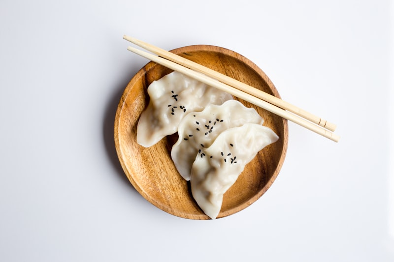

Turnkey Catering Solutions in Uptown
Whether you are feeding a corporate department at Gateway Village, hosting a study session at Johnson & Wales, or having family over for dinner, Great Wok makes group dining easy and affordable.
Our catering pans come piping hot with serving spoons, fortune cookies, soy sauce packets, and duck sauce.
Interactive Catering & Feast Calculator
Select your group size and catering format:

How to Order Group Trays
Please provide 1 to 3 hours notice for large catering orders. Quick curbside pickup is available at 718 W Trade Street.
Call (704) 333-0080 to OrderSignature Catering Trays
General Tso's Party Pan (Half Pan)
Serves 8 - 10 guests. Full half-deep hotel pan of crispy General Tso's chicken with broccoli florets, accompanied by a separate pan of white or fried rice.
House Special Lo Mein Party Pan
Serves 8 - 10 guests. Half hotel pan of egg noodles tossed with shrimp, chicken, roast pork, and crisp vegetables in savory brown sauce.
Pork Fried Rice Catering Pan
Serves 10 - 12 guests. Half pan of wok-charred jasmine fried rice with diced roast pork, egg, onions, and sweet peas.
Egg Roll & Rangoon Platter (24pc)
12 crispy pork egg rolls and 12 fried cream cheese crab rangoons, served with sweet duck sauce and spicy Chinese mustard.
Steamed Dumpling Tray (30pc)
30 handmade steamed pork and scallion dumplings packed in a party tray with a large tub of ginger soy dipping sauce.
Sesame Chicken Party Pan
Serves 8 - 10 guests. Half hotel pan of crispy sweet honey sesame chicken with broccoli florets and a separate pan of jasmine white rice.